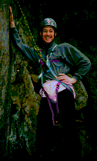

Fjellsportgruppa er en gruppe i idrettslaget som avholder sportslige og sosiale arrangementer for alle frilufts-interesserte ansatte.
Deltakere på våre aktiviteter spenner fra nybegynnere på ski som kan tenke seg en sosial hyttetur til fjells, til ekstrem-sporterne som samles på fjelltopper og kjører "ski-ekstrem". Av aktiviteter som vi driver på med kan følgende nevnes:
Ellers besitter gruppa en masse fjellsportkompetanse: ski- og klatreinstruksjon, forslag til turer, råd ved kjøp av utstyr osv.